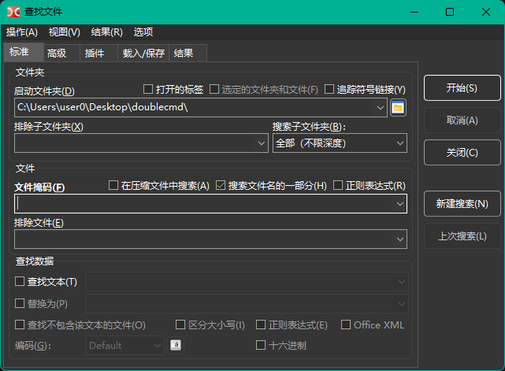
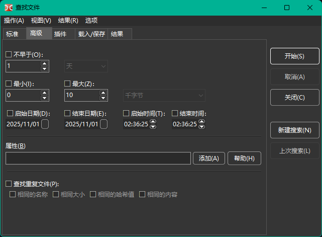
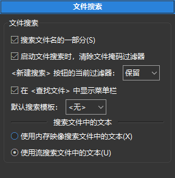

在此选项卡可以按文件名和文件内容进行搜索。

启动文件夹 字段指定搜索起始目录，默认使用活动面板的当前目录。
用于指定搜索位置的附加选项：
打开的标签 – 仅使用已打开选项卡的目录（包括活动与非活动面板的选项卡）。
选定的文件夹和文件 – 启用后仅在活动面板中被选中的文件和文件夹中进行搜索。如果文件面板中已有选中项，该选项会自动启用。
追踪符号链接 – 如果发现指向目录的符号链接，将读取并使用其目标目录；否则该符号链接将被视为普通文件。
排除子文件夹 – 要从搜索中排除的目录掩码列表，可在此指定文件夹名以及相对或绝对路径。
搜索子文件夹 有以下选项：
仅当前文件夹，
选择层级深度（1 到 100），
全部（不限深度）。
此设置控制在文件系统树中搜索的深度。若设置为“仅当前文件夹”，搜索仅在“启动文件夹”中指定的目录进行（不包含子文件夹）。
文件掩码 字段设置搜索掩码，也可以直接输入完整或部分文件名。
附加选项：
在压缩文件中搜索 – 启用后，Double Commander 会尝试读取搜索目录中所有压缩包内的内容。支持的格式取决于已添加的打包器插件。
搜索文件名的一部分 – 若要进行精确文件名匹配，应将此项取消选中。
正则表达式 – 启用后可以使用 正则表达式。
排除文件 – 要从搜索中排除的文件名列表，支持掩码。
注意：文件掩码, 排除文件, 启动文件夹 和 排除子文件夹 支持使用分号 ";"（无空格）分隔多个值。如果需要查找文件名包含分号的文件，可使用正则表达式。
若选中 查找文本 复选框，程序将在文件中搜索指定文本。启用 替换为 字段并填写文本后，还可以将匹配文本替换为指定文本。
附加选项：
查找不包含该文本的文件 – 显示不包含 查找文本 中指定文本的文件。
区分大小写 – 区分大小写，例如 “Fallout” 与 “fallout” 将被视为不同。
按十六进制字符搜索 – 按十六进制字符搜索（不区分大小写，可带或不带字符间的空格，例如 "C0 C1 C2" 或 "c0c1c2"）。
Office XML – 启用对 Microsoft Office（DOCX、XLSX）和 OpenOffice/LibreOffice（ODT、ODS）文件的搜索。
还可设置编码（UTF、ISO、KOI、DOS、ANSI 等）并启用正则表达式。
关于文本编码：可设置特定编码或使用以下特殊值：
Default – 取决于操作系统和系统区域设置：
Windows：默认系统 ANSI 编码。
Linux 及其他类 Unix 系统：默认系统文本编码，现代系统通常使用 UTF-8。
ANSI – 默认系统 ANSI 编码（依赖区域设置）。
OEM – 默认系统 OEM（DOS）编码（依赖区域设置）。
编码按钮（）允许指定多个编码。
开始 按钮开始搜索，取消 停止搜索，关闭 关闭查找窗口。
新建搜索 – 清除旧结果并允许以新条件开始新搜索。
上次搜索 – 加载上一次搜索的参数（在当前会话中，未关闭 Double Commander 前）。
默认情况下，Double Commander 会保存输入字段的历史。要删除历史中的不必要条目，可使用 Shift+Del；也可在 Configuration 设置中禁用保存历史。
“高级” 选项卡允许指定附加条件：按文件修改日期的日期、时间与年龄、最小和最大文件大小，以及文件属性。

文件属性可手动指定，或使用 添加 按钮的助手（下面小节将详细说明文件属性的用法）。帮助 按钮会打开本页的下一个子节。
在此还可选择通过以下一项或多项条件查找重复文件：
相同的文件名；
相同大小；
相同的哈希值：使用 BLAKE2b（x64）或 BLAKE2s 校验和；
相同的内容（逐字节比较）。
结果中将显示文件名、匹配文件的组号以及文件位置。将结果传入列表框后，可使用特殊选择模式，仅选择重复项：在 标记 子菜单中使用 选择一组文件 与 取消选择一组文件。
要按特定属性查找，需输入一个字符串模版，指定要匹配的属性及其是否应被设置或未设置。
单个属性的表示格式为：
<attribute>+ 或 <attribute>-
加号表示文件必须具有该属性，减号表示文件不得具有该属性。
各 <attribute> 标识符如下：
| Windows 下的属性 | |
|---|---|
| 属性字母 | 含义 |
a | archive（归档） |
c | compressed（压缩包，NTFS 压缩） |
d | directory（文件夹） |
e | encrypted（加密，EFS） |
h | hidden（隐藏） |
l | symlink（符号链接） |
p | sparse（稀疏） |
r | read only（只读） |
s | system（系统） |
t | temporary（临时） |
| Unix/Linux 下的属性（权限） | |
|---|---|
| 权限字母 | 含义 |
ur | user read（用户可读） |
uw | user write（用户可写） |
ux | user execute（用户可执行） |
gr | group read（组可读） |
gw | group write（组可写） |
gx | group execute（组可执行） |
or | others read（其他用户可读） |
ow | others write（其他用户可写） |
ox | others execute（其他用户可执行） |
us | set user ID（设置用户 ID） |
gs | set group ID（设置组 ID） |
sb | sticky bit（粘滞位） |
| Unix/Linux 下的属性（文件类型） | |
|---|---|
| 文件类型字母 | 含义 |
b | block device（块设备） |
c | character device（字符设备） |
d | directory（文件夹） |
f | named pipe (FIFO)（命名管道） |
l | symlink（符号链接） |
r | regular file（常规文件） |
s | socket（套接字） |
在 Unix/Linux 中也可以使用八进制表示法来表示权限。例如 0750 等价于组合了 ur, uw, ux, gr 和 gx。
多个属性可以用 AND 关系组合，只需依次指定各个模式。
例如：r+s+h+ 匹配同时设置了只读、隐藏和系统属性的文件。
这些 AND 组合还可以用竖线 "|" 连接，表示 OR 关系。
例如：r+|s+h+ 匹配满足下列任一条件的文件：
可在序列开头使用 "!" 对 AND 序列取反。
例如：!r+s+h+ 匹配不同时具备这三项属性的文件（即匹配的文件可能不具备其中任意一项或多项，但不能同时具备全部三项）。
取反仅适用于 AND 序列，因此模式 !r+|!s+h+ 匹配的文件要么：
r-）| Windows 示例 | |
|---|---|
| 示例模式 | 解释 |
a+s-h- | 匹配设置了归档属性且既不包含系统属性也不包含隐藏属性的文件 |
e+|c+ | 匹配被压缩或被加密的文件 |
d- | 匹配文件（但不匹配文件夹） |
| Unix/Linux 示例 | |
|---|---|
| 示例模式 | 解释 |
uw+|gw+|ow+ | 匹配对用户、组或任何人都可写的文件 |
222+ | 匹配对用户、组和其他人均可写的文件 |
d+ox+ | 匹配对任何人可访问的目录 |
!700+ | 匹配对用户并非完全可访问的文件 |
使用搜索（DSX）和内容（WDX）插件进行搜索（插件类型及其安装方法见 此处）。
例如按最小和最大宽度搜索图片：

DSX 插件接口允许从“常规”和“高级”选项卡向插件传递参数，传递的具体参数列表取决于插件的功能。
WDX 插件扩展了搜索，其字段可按以下规则组合：
与（全部匹配） – 所有条件必须匹配。
或（任意匹配） – 满足任一条件即可。
操作符（运算符）和 值（值）取决于插件字段返回的数据类型：数字、字符串、日期、时间或布尔值。对某些数值，可选择单位（例如大小或持续时间）。支持的比较操作如下：
| 运算符 | 说明 |
|---|---|
= |
等于 |
!= |
不等于 |
=(case) |
等于，区分大小写 |
!=(case) |
不等于，区分大小写 |
> |
大于 |
< |
小于 |
>= |
大于或等于 |
<= |
小于或等于 |
contains |
字符串包含特定文本 |
!contains |
字符串不包含特定文本 |
contains(case) |
字符串包含特定文本，区分大小写 |
!contains(case) |
字符串不包含特定文本，区分大小写 |
regexp |
字符串匹配 正则表达式 |
!regexp |
字符串不匹配 正则表达式 |
“载入/保存” 选项卡允许保存搜索参数，以便以后再次使用。
此外，可在此查看程序设置中创建的模版（例如 颜色 > 文件类型、工具提示）以及某些工具中使用的模版（例如 标记组、同步文件夹）。
在模版列表下方有一个提示字段：选中某个模版时会显示该模版保存的 文件掩码 与 起始目录（若已保存）。
该选项卡包含搜索结果（仅为完整文件名列表），并具有以下按钮：
查看 – 在查看器中打开选中文件（F3）。
编辑 – 在编辑器中打开选中文件（F4）。
跳转到文件 – 关闭搜索窗口，在活动文件面板中打开选中文件所在目录并将光标定位到该文件（Enter 或双击）。
发送到列表框 – 将找到的文件列表传入活动文件面板。
另也可使用上下文菜单：
在新标签中打开 – 类似于 跳转到文件 命令，但选中文件将在后台选项卡中打开（多个选中文件将分别在独立后台选项卡中打开）。
在查看器中显示。
在编辑器中显示。
从列表中移除（或 Del） – 从列表中移除不合适的结果（不会影响文件系统）。
显示所有找到的项目 – 取消上一步操作的效果，显示所有找到的项目。
要多选文件，可使用鼠标配合 Ctrl 与 Shift 键，或使用 Shift 与方向键。
左箭头 与 右箭头 键可在搜索结果列表与 New search 按钮之间切换焦点。
与查找工具相关的附加参数位于 文件操作 > 文件搜索 设置部分。

文件搜索设置：
搜索文件名的一部分 – 取消选中时，Double Commander 将进行精确名称匹配。
启动文件搜索时，清除文件掩码过滤器 – 启用后，Double Commander 每次启动搜索时会自动清除 File mask 字段。
<新建搜索> 按钮的当前过滤器 – 设置“New search”按钮对其余搜索参数的处理：保持当前状态、重置为默认或询问。
在 <查找文件> 中显示菜单栏 – 在“查找文件”窗口显示菜单栏（同时显示热键），并提供快速跳转到该设置部分及 热键设置 的项目。
默认搜索模版 – 可选择先前保存的搜索模版之一，Double Commander 将在每次打开查找对话框时使用其参数作为默认值。
搜索文件中的文本：
使用内存映射搜索文件中的文本 – 在搜索前将文件映射到虚拟内存，速度更快，但需要更强的计算资源。
使用流搜索文件中的文本 – 将文件拆分为若干部分再开始搜索（较慢，但占用资源更少）。